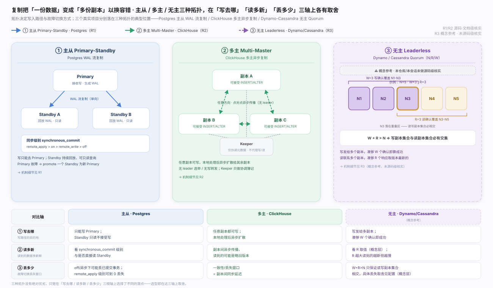
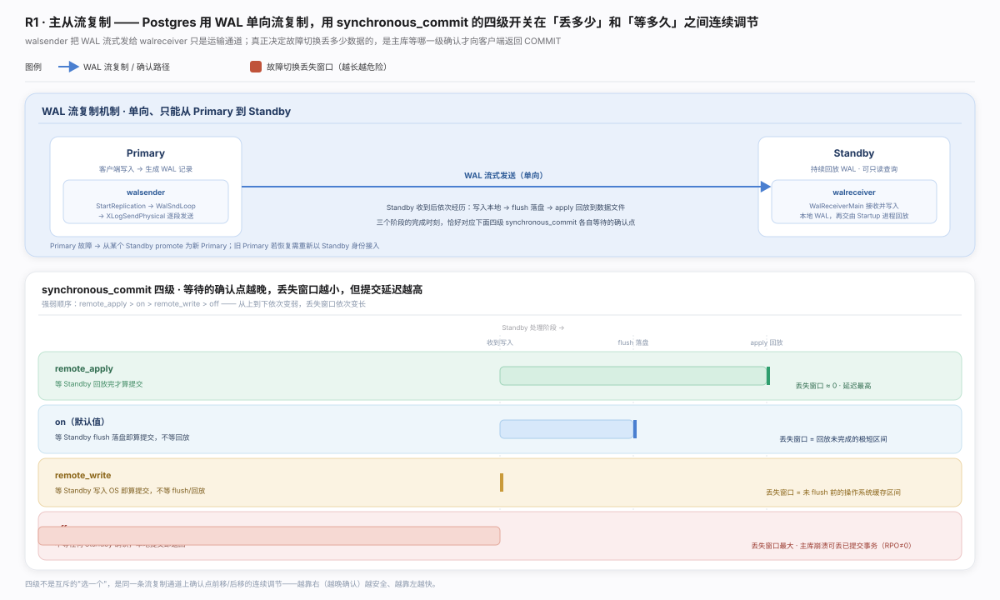
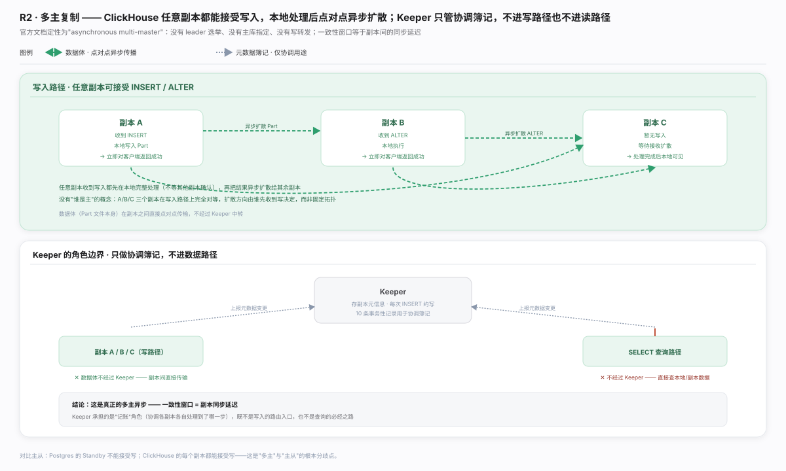
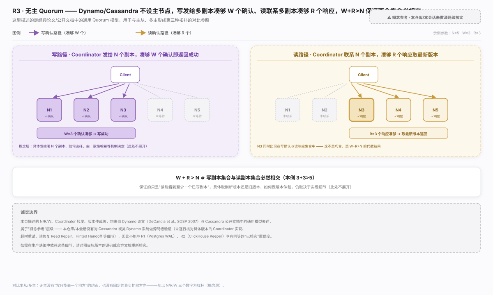
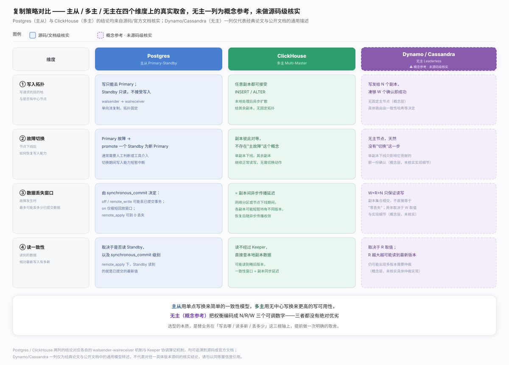

复制把"一份数据"变成"多份副本"以换容错，取舍轴有三条：写去哪 / 读多新 / 丢多少。主从/多主/无主三种拓扑及三个真实落点——Postgres、ClickHouse、Dynamo/Cassandra（概念参考）——在三轴上的分布见生态图。

Postgres · 主从：WAL 单向流复制，Standby 只读、故障需显式 promote。真正决定"丢多少"的旋钮是 synchronous_commit 四档——越弱提交越快、故障丢失窗口越大，档位语义与机制见图。

ClickHouse · 多主：官方定性 asynchronous multi-master，任意副本直接接受写、本地返回后异步扩散，无 leader、无写转发；Keeper 只做协调簿记，数据传输与查询都不经过它。角色边界与一致性窗口见图。

Dynamo/Cassandra · 无主 Quorum：W+R>N 使读写副本集合必然相交，是无主模型唯一的数学硬保证，路径与代数关系见图。诚实边界：本节属概念参考，源自 Dynamo 论文与 Cassandra 公开文档，本仓库未做源码级核实，置信度不等同 R1/R2，图中已同等披露。

四维对照（写入拓扑/故障切换/丢失窗口/读一致性）见图。一句话总纲：选型即替业务在"写去哪/读多新/丢多少"三轴上提前定死取舍——Postgres 与 ClickHouse 可源码/文档验证，Dynamo/Cassandra 仅停留在概念参考层。
- PostgreSQL: Warm Standby Servers for High Availability — WAL 流复制、walsender/walreceiver、Standby 只读与 promote 流程的官方说明 - PostgreSQL: Write Ahead Log settings（synchronous_commit 一节；具体锚点本轮未能核实是否稳定，故只给根链接） — remote_apply/on/remote_write/off 四档语义与丢失窗口权衡 - ClickHouse: ReplicatedMergeTree — 多主异步复制机制、Keeper 协调簿记角色的官方说明 - Dynamo: Amazon's Highly Available Key-value Store（DeCandia et al., SOSP 2007）— N/R/W Quorum 模型的原始论文，PDF - Cassandra: Dynamo — Cassandra 对 Dynamo 式无主复制模型的公开文档描述（概念参考，未做源码级核实）